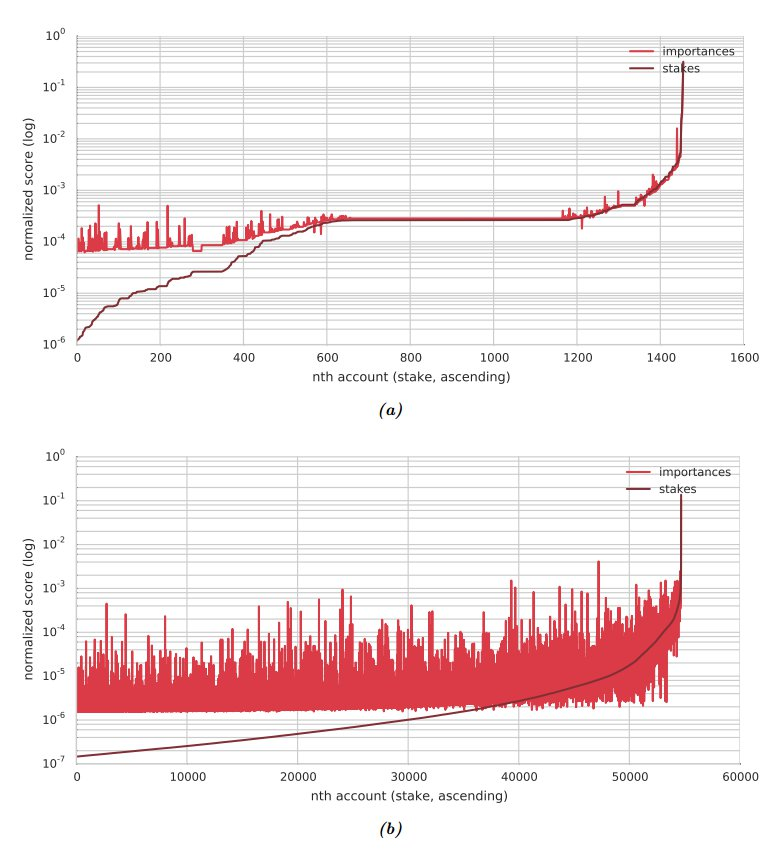
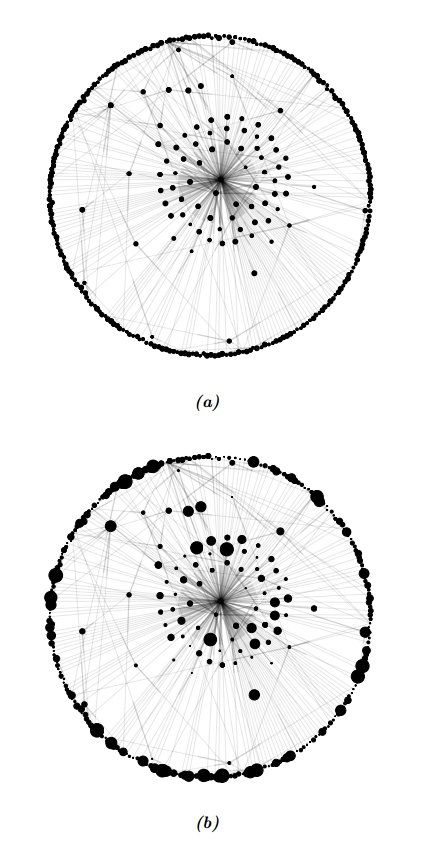

Proof of Stakeとの比較
7.5節: 重要度スコアの計算で説明したように、アカウントにて権利が確定した（vested）残高は重要度スコアの大きな部分を占めます。 権利が確定した（vested）残高を、Proof-of-Stake(PoS)を実装した暗号通貨における「持ち分(stake)」に相当するとみなすならば、PoSとPoIは似ているとも言えるでしょう。 PoSとPoIとが互いに似ている点と異なる点を比較するため、NEMとビットコインとのトランザクショングラフの比較解析を行いました。 ビットコインを用いたのは比較的大きなユーザーベースとトランザクショングラフを持つためです。
2015年4月29日の時点で、NEMのトランザクショングラフには収穫に参加できるアカウント（7.1節: 重要度スコアの計算に参加する条件を参照）が1,456アカウント存在しました。 また、ビットコインの解析用データは、2014年10月の時点での1ヶ月分のデータをビットコインネットワークからダウンロードしました。 BTCの量をNEMに合わせてノーマライズすると、54,683アカウントが収穫に参加する条件を満たしていました。 ノーマライズはBTCの量に時価総額比率(market cap ratio)をかけることで行いました。したがって、最低0.01777BTCを権利確定（vest）していることが収穫に参加できる条件でした。 ブロック長は10倍することでNEMとおなじになるように調整しました。
図11(a)はNEMトランザクショングラフ内の、1,456の収穫参加可能アカウントにおける重要度スコアと権利確定済の（vested）残高を、ログスケールで（権利確定済の（vested）残高に関して昇順で）プロットしたものです。 (b)はビットコインの54,683の収穫参加可能アカウントのグラフです。 図から、権利確定済の（vested）残高は単調増加していますが、重要度スコアはそうではないことがわかります。 つまり権利確定済の（vested）残高が少ないアカウントは、PoSよりもPoIでより有利になるということです。
図12はPoIとPoSの質的な違いを見るためにプロットされた、NEMトランザクションネットワークグラフです。 権利確定済の（vested）残高の額と重要度スコアのそれぞれに関してノーマライズしたことで、額が高い場合と低い場合のスコアの違いがより鮮明になっています。 ノーマライズは以下の手順で行いました。
- 合計値が一定になるようにする
- 絶対値のlogをとる
- 指数関数にマップ
- 再び合計値が一定になるようにスケールを変更
グラフから、権利確定済の（vested）残高は小数のノードに集中しているのに対し、重要度スコアはより広く分布していることがわかります。
アカウントの突出度の違いを定量化するため、権利確定済の（vested）残高と重要度スコアのそれぞれについてNEMとBitcoinのアカウントをランク付け（「スコア/残高」比が同じ場合は同じランクに）し、 2つの指標のそれぞれについてランクがどのように異なるかを見ました。 表1: 権利確定済の（vested）残高 vs 重要度スコア でのNEMアカウントのランクの違い はNEMのトランザクショングラフの場合の結果で、 表2: 権利確定済の（vested）残高 vs 重要度スコア でのBitcoinアカウントのランクの違い はBitcoinの場合の結果です。 全体で見ると、重要度スコアでランク付けした場合、権利確定済の（vested）残高でランク付けした場合に比べてNEMアカウントは約338ランク低くなりますが、 残高量が上位50%に属するアカウントは443ランク落とすのに対し、下位50%は232ランクです。 Bitcoinの同様の場合は平均67.5ランク下がります。下位50%は2814ランク上昇したのに対し、上位50%は2950ランク上がります。 これはPoIはPoSに比べて富めるものに対してより厳しいということを示します。
表1
権利確定済の（vested）残高 vs 重要度スコア でのNEMアカウントのランクの違い
| 重要度(Importance)と残高(Stake)での平均ランク上昇数(下位50%) | -232.4 |
| 重要度(Importance)と残高(Stake)での平均ランク上昇数(上位50%) | -443.8 |
| 差分 | -338.1 |
表2
権利確定済の（vested）残高 vs 重要度スコア でのBitcoinアカウントのランクの違い
| 重要度(Importance)と残高(Stake)での平均ランク上昇数(下位50%) | 2814.6 |
| 重要度(Importance)と残高(Stake)での平均ランク上昇数(上位50%) | -2949.6 |
| 差分 | -67.5 |
図11

- (a) NEM
- (b) Bitcoin
のそれぞれにおける収穫参加可能アカウントの情報(重要度スコアと権利確定済の（vested）残高) 2つの情報は合計が一定の値(1.0)になるようそれぞれノーマライズされており、アカウントは昇順でソートされている。 アカウントはx軸に、グラフの情報はy軸(logスケール)にプロットされている。
図12

NEMのトランザクショングラフ。各ノードは以下でノーマライズされている。ノーマライズの詳細は上記を参照
- (a) 重要度スコア
- (b) 権利確定済の（vested）残高